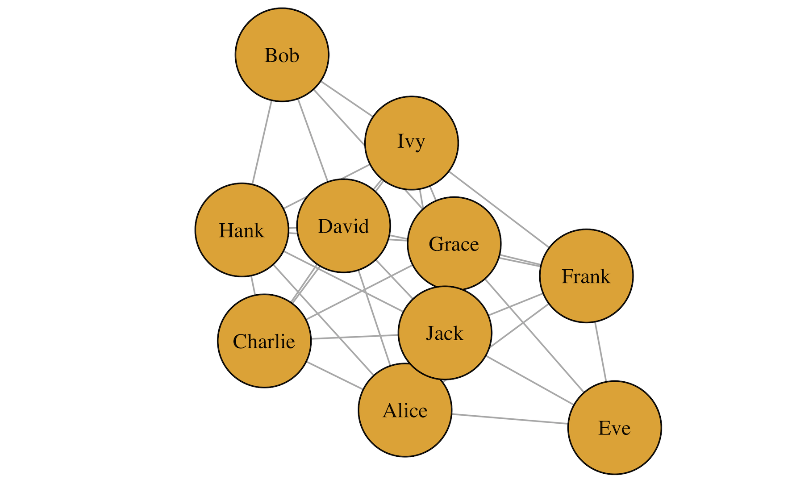

What Determines Who We Interact With Next?
Selecting Variables With Bayesian Shrinkage in Relational Event Models
Jonathan Koop
January 17, 2025
Dynamic Network Data
From Relational Event History Data…
REH data typically includes the time of the event, the sender and receiver of the event, and other covariates (Butts 2008).
…to Relational Event Models
\[ \begin{aligned} \log \text{Event Rate} &= -0.2 X_\text{AgeDiff} \\ &\quad + 0.6 X_\text{SameGender} \\ &\quad + 0.4 X_\text{ExtravSender} \end{aligned} \]
R Code
library(remstimate)
# loading data
data(ao_data)
# processing event sequence with remify
ao_reh <- remify::remify(edgelist = ao_data$edgelist, model = "actor")
# specifying linear predictor (for sender rate and receiver choice model)
rate_model <- ~ 1 + remstats::indegreeSender()
choice_model <- ~ remstats::inertia() + remstats::reciprocity()
# calculating statistics
ao_reh_stats <- remstats::remstats(reh = ao_reh,
sender_effects = rate_model,
receiver_effects = choice_model)
# running estimation
ao_mle <- remstimate::remstimate(reh = ao_reh,
stats = ao_reh_stats,
method = "MLE",
ncores = 1)
# summary
summary(ao_mle)Unfortunately, the code will not be executed here.
Cached and Labelled Code, Executed
Relational Event Model (actor oriented)
Call rate model **for sender**:
~1 + remstats::indegreeSender()
Coefficients rate model (MLE with interval likelihood):
Estimate Std. Err z value Pr(>|z|) Pr(=0)
baseline -4.8062015 0.1832563 -26.2266709 0.0 <2e-16
indegreeSender -0.0083633 0.0159467 -0.5244534 0.6 0.8971
Null deviance: 1177.625 on 100 degrees of freedom
Residual deviance: 1177.348 on 98 degrees of freedom
Chi-square: 0.2770484 on 2 degrees of freedom, asymptotic p-value 0.8706422
AIC: 1181.348 AICC: 1181.472 BIC: 1186.558
--------------------------------------------------------------------------------
Call choice model **for receiver**:
~remstats::inertia() + remstats::reciprocity()
Coefficients choice model (MLE with interval likelihood):
Estimate Std. Err z value Pr(>|z|) Pr(=0)
inertia -0.032508 0.077037 -0.421983 0.6730 0.9015
reciprocity 0.018287 0.071630 0.255305 0.7985 0.9064
Null deviance: 2.772589 on 100 degrees of freedom
Residual deviance: 277.0551 on 98 degrees of freedom
Chi-square: -274.2826 on 2 degrees of freedom, asymptotic p-value 1
AIC: 281.0551 AICC: 281.1789 BIC: 286.2655The Environment Used
- Linking packages into the project library ... [68/126] [69/126] [70/126] [71/126] [72/126] [73/126] [74/126] [75/126] [76/126] [77/126] [78/126] [79/126] [80/126] [81/126] [82/126] [83/126] [84/126] [85/126] [86/126] [87/126] [88/126] [89/126] [90/126] [91/126] [92/126] [93/126] [94/126] [95/126] [96/126] [97/126] [98/126] [99/126] [100/126] [101/126] [102/126] [103/126] [104/126] [105/126] [106/126] [107/126] [108/126] [109/126] [110/126] [111/126] [112/126] [113/126] [114/126] [115/126] [116/126] [117/126] [118/126] [119/126] [120/126] [121/126] [122/126] [123/126] [124/126] [125/126] [126/126] Done!
The following package(s) will be updated in the lockfile:
# CRAN -----------------------------------------------------------------------
- askpass [* -> 1.2.1]
- backports [* -> 1.5.0]
- base64enc [* -> 0.1-3]
- BH [* -> 1.84.0-0]
- bit [* -> 4.5.0]
- bit64 [* -> 4.5.2]
- blob [* -> 1.2.4]
- broom [* -> 1.0.7]
- bslib [* -> 0.8.0]
- cachem [* -> 1.1.0]
- callr [* -> 3.7.6]
- cellranger [* -> 1.1.0]
- cli [* -> 3.6.3]
- clipr [* -> 0.8.0]
- colorspace [* -> 2.1-1]
- conflicted [* -> 1.2.0]
- cpp11 [* -> 0.5.0]
- crayon [* -> 1.5.3]
- crosstalk [* -> 1.2.1]
- curl [* -> 6.0.1]
- data.table [* -> 1.16.4]
- DBI [* -> 1.2.3]
- dbplyr [* -> 2.5.0]
- digest [* -> 0.6.37]
- dplyr [* -> 1.1.4]
- DT [* -> 0.33]
- dtplyr [* -> 1.3.1]
- evaluate [* -> 1.0.1]
- fansi [* -> 1.0.6]
- farver [* -> 2.1.2]
- fastmap [* -> 1.2.0]
- fontawesome [* -> 0.5.3]
- forcats [* -> 1.0.0]
- fs [* -> 1.6.5]
- gargle [* -> 1.5.2]
- generics [* -> 0.1.3]
- ggplot2 [* -> 3.5.1]
- glue [* -> 1.8.0]
- googledrive [* -> 2.1.1]
- googlesheets4 [* -> 1.1.1]
- gtable [* -> 0.3.6]
- haven [* -> 2.5.4]
- highr [* -> 0.11]
- hms [* -> 1.1.3]
- htmltools [* -> 0.5.8.1]
- htmlwidgets [* -> 1.6.4]
- httpuv [* -> 1.6.15]
- httr [* -> 1.4.7]
- ids [* -> 1.0.1]
- igraph [* -> 2.1.1]
- isoband [* -> 0.2.7]
- jquerylib [* -> 0.1.4]
- jsonlite [* -> 1.8.9]
- knitr [* -> 1.49]
- labeling [* -> 0.4.3]
- later [* -> 1.4.1]
- lattice [* -> 0.22-6]
- lazyeval [* -> 0.2.2]
- lifecycle [* -> 1.0.4]
- lubridate [* -> 1.9.3]
- magrittr [* -> 2.0.3]
- MASS [* -> 7.3-61]
- Matrix [* -> 1.7-1]
- memoise [* -> 2.0.1]
- mgcv [* -> 1.9-1]
- mime [* -> 0.12]
- modelr [* -> 0.1.11]
- munsell [* -> 0.5.1]
- mvnfast [* -> 0.2.8]
- nlme [* -> 3.1-166]
- openssl [* -> 2.2.2]
- pacman [* -> 0.5.1]
- pillar [* -> 1.9.0]
- pkgconfig [* -> 2.0.3]
- plotly [* -> 4.10.4]
- prettyunits [* -> 1.2.0]
- processx [* -> 3.8.4]
- progress [* -> 1.2.3]
- promises [* -> 1.3.2]
- ps [* -> 1.8.1]
- purrr [* -> 1.0.2]
- R6 [* -> 2.5.1]
- ragg [* -> 1.3.3]
- rappdirs [* -> 0.3.3]
- RColorBrewer [* -> 1.1-3]
- Rcpp [* -> 1.0.13-1]
- RcppArmadillo [* -> 14.2.0-1]
- RcppProgress [* -> 0.4.2]
- readr [* -> 2.1.5]
- readxl [* -> 1.4.3]
- rematch [* -> 2.0.0]
- rematch2 [* -> 2.1.2]
- remify [* -> 3.2.6]
- remotes [* -> 2.5.0]
- remstats [* -> 3.2.2]
- remstimate [* -> 2.3.11]
- renv [* -> 1.0.11]
- reprex [* -> 2.1.1]
- rlang [* -> 1.1.4]
- rmarkdown [* -> 2.29]
- rstudioapi [* -> 0.17.1]
- rvest [* -> 1.0.4]
- sass [* -> 0.4.9]
- scales [* -> 1.3.0]
- selectr [* -> 0.4-2]
- stringi [* -> 1.8.4]
- stringr [* -> 1.5.1]
- sys [* -> 3.4.3]
- systemfonts [* -> 1.1.0]
- textshaping [* -> 0.4.0]
- tibble [* -> 3.2.1]
- tidyr [* -> 1.3.1]
- tidyselect [* -> 1.2.1]
- tidyverse [* -> 2.0.0]
- timechange [* -> 0.3.0]
- tinytex [* -> 0.54]
- trust [* -> 0.1-8]
- tzdb [* -> 0.4.0]
- utf8 [* -> 1.2.4]
- uuid [* -> 1.2-1]
- vctrs [* -> 0.6.5]
- viridisLite [* -> 0.4.2]
- vroom [* -> 1.6.5]
- withr [* -> 3.0.2]
- xfun [* -> 0.49]
- xml2 [* -> 1.3.6]
- yaml [* -> 2.3.10]
The version of R recorded in the lockfile will be updated:
- R [* -> 4.4.2]
- Lockfile written to "~/Documents/Master/MethStats/Sem3/Markup/markup_deliverables/00_exercises/02_presentation/02_exercise_2/renv.lock".References
Butts, Carter T. 2008. “4. A Relational Event Framework for Social Action.” Sociological Methodology 38 (1): 155–200. https://doi.org/10.1111/j.1467-9531.2008.00203.x.